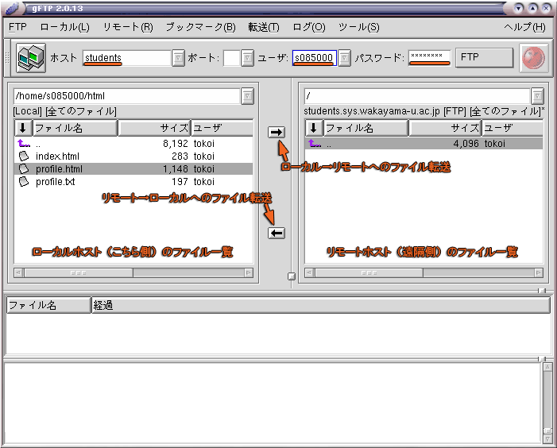

ホームディレクトリに public_html というディレクトリを作成し，そこに HTML ファイル等を置けば，下記の URL で参照できるようになります．ただし学生のアカウントについては，学内のみに公開されています．
| 和歌山大学システム情報学センターの利用者ホームページ |
|---|
| http://www.wakayama-u.ac.jp/~ユーザ名/ |
情報処理I（デザイン情報学科）の受講生は html というディレクトリを作成しており，そこに index.html 等を置いているはずですから，html というディレクトリ名を public_html に変更するだけで上記の URL から参照できるようになります．
情報処理I（デザイン情報学科）の受講生に限り，学外からも参照可能な別の Web サーバを用意しています．
| 情報処理I（デザイン情報学科）受講生用公開 Web サーバ |
|---|
| http://students.sys.wakayama-u.ac.jp/ユーザ名/ |
ここにファイルをアップロードするには，scp コマンドあるいは ftp コマンドを使用してください．index.html あるいは index.shtml をアップロードしたあと Netscape を再読み込みすると，http://students.sys.wakayama-u.ac.jp/ の Index のところにリンクが現れます．
scp コマンドは cp コマンドとほぼ同じ使い方をします．異なるコンピュータにネットワークを通じてファイルをコピー（転送）するには，コピー先のファイル名あるいはディレクトリ名の左に "ホスト名:" を付けてください．ホスト名とはコンピュータのネットワーク上での名前で，上記の Web サーバのホスト名は students.sys.wakayama-u.ac.jp です．システム工学部内なら，students だけでも通用します．なお，コピー先に "ホスト名:" だけを指定してファイル名やディレクトリ名を省略すると，コピー先のコンピュータのホームディレクトリにコピーされます．
| scp コマンドによるファイルの遠隔コピーの例 | |
|---|---|
| index.html を students というコンピュータにコピーする． |
% scp index.html students:[Enter] |
| 拡張子が .html ののファイルを students というコンピュータにコピーする． |
% scp *.html students:[Enter] |
最初に scp を使ってファイルをコピーするときは，コピー先のコンピュータが本物かどうか確認するメッセージが出てきます．yes をタイプして [Enter] をタイプしてください．
% scp index.html students:[Enter]
The authenticity of host 'students (133.42.165.1)' can't be established.
RSA key fingerprint is 1d:d3:45:02:fc:d6:ae:ff:8c:d9:7a:64:d4:42:0a:b5.
Are you sure you want to continue connecting (yes/no)? yes[Enter]
Warning: Permanently added 'students,133.42.165.1' (RSA) to the list of known ho
sts.
s085000@students's password:（パスワードを入力）[Enter]
index.html 100% 582 28.6KB/s 00:00
転送したファイルの削除等のファイル操作を行いたいときは，ssh コマンドを使って遠隔ログイン（リモートログイン）してください．students 上で cp/mv/rm 等のコマンドを使ってファイルを操作できます．
% ssh students[Enter] s085000@students's password:（パスワードを入力）[Enter] Last login: Sun May 25 18:28:08 2003 from nachi00 [s085000@students ~]$ rm index.html[Enter] [s085000@students ~]$ Ctrl-D logout ←別のコンピュータ students からのログアウト %
ftp コマンドは scp のような単機能コマンドではなく，遠隔コンピュータのファイル操作なども行うことができます．
% ftp students[Enter] Connected to students.sys.wakayama-u.ac.jp. 220 ProFTPD 1.2.6 Server (Students' Home Pages) [students.sys.wakayama-u.ac.jp] Name (students:s085000):（そのまま[Enter]で構わない） 331 Password required for tokoi. Password:（パスワードを入力）[Enter] 230 User tokoi logged in. Remote system type is UNIX. Using binary mode to transfer files. ftp> put index.html[Enter] ←index.html を転送 ftp> mput *.html[Enter] ←拡張子が .html のファイルを転送 ftp> del index.html[Enter] ←遠隔コンピュータの index.html を削除 ftp> bye[Enter] ←終了 221 Goodbye. %
なお gftp コマンドを使えば，グラフィカルなユーザインタフェースでファイルの転送や操作ができます．
